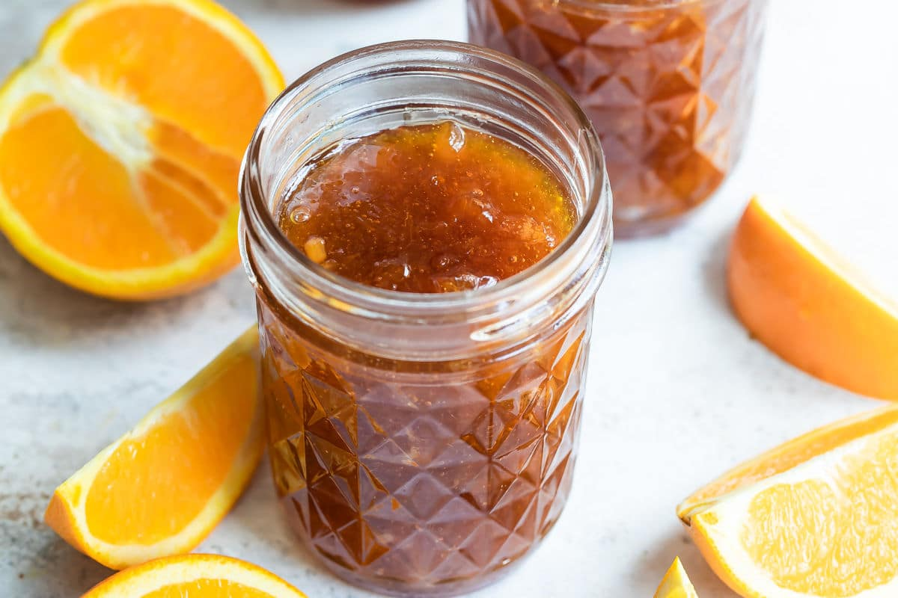

Oranges
About
An orange is a type of citrus fruit which people often eat. Oranges are a very good source of vitamins, especially vitamin C. Orange juice is an important part of many people's breakfast. The "sweet orange", which is the kind that are most often eaten today, grew first in Asia but now grows in many parts of the world.
Oranges are round orange-coloured fruit that grow on a tree which can reach 10 metres (33 ft) high. Orange trees have dark green shiny leaves and small white flowers with five petals. The flowers smell very sweet which attracts many bees.
An orange has a tough shiny orange skin. Inside, the fruit is divided into "segments", which have thin tough skins that hold together many little sections with juice inside. There are usually ten segments in an orange, but sometimes there are more. Inside each segment of most types of orange there are seeds called "pips". Orange trees can be grown from pips, but some types of orange trees can only be grown from "cuttings" (a piece cut off a tree and made to grow roots). he segments and the skin are separated by white stringy fibrous material called "pith". In most types of oranges, the skin can be peeled off the pith, and the segments can be pulled apart with the fingers to be eaten. In some oranges it is hard to take the skin off. With mandarin oranges, the skin, pith and segments can all be pulled apart very easily. Orange skin is often called "orange peel".
Products made from oranges
-
Orange juice is obtained by squeezing the fruit on a special tool (a juicer or squeezer) and collecting the juice in a tray underneath. This can be made at home or, on a much larger scale, industrially. Brazil is the largest producer of orange juice in the world, followed by the United States, where it is one of the commodities traded on the New York Board of Trade.

-
Marmalade preserves are traditionally made with Seville oranges, which are less sweet. All parts of the fruit are used: the pith and pips (separated and placed in a muslin bag) are boiled in a mixture of juice, slivered peel, sliced-up flesh, sugar, and water to extract their pectin, which helps the conserve to set.